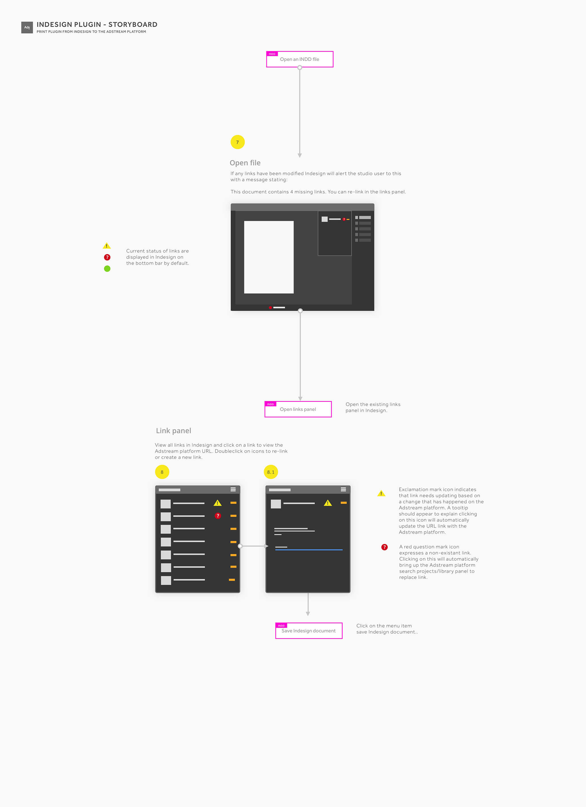
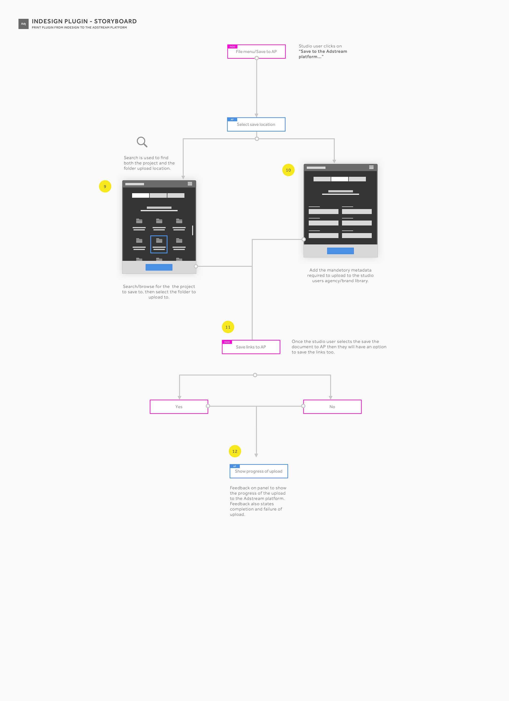

What I did
I worked with our internal design and development teams, on everything ranging from interpreting high level requirements, producing flows, scenarios, sketches, wireframes, user tests, visual designs, prototypes, interactions and micro-interactions and all sorts of UI/UX explorations.
Key accomplishment 🏅
Offering a solution that integrates the Adstream Library with Adobe InDesign is a strategic move that essentially solidifies Adstream’s presence as a strong player in print-based workflows by giving current users less of a reason to leave to a competitor, while increasing brand value and potentially attracting new print business, leading to larger market share.
Objective
One of the key aspects of the Adstream Platform are the capabilities it offers to print-specific workflows. Many studios, agencies, production and post-production studios use the platform to keep track of their projects, assets and collections as it allows for easy tagging, sorting, searching, annotating, sharing and version control.
A big part of the typical print workflow involves using Adobe InDesign to create a multitude of formats, and given this scenario, the Product team at Adstream were tasked with creating a solution that bridged the gap between InDesign’s powerful desktop publishing capabilities and the Adstream Platform, creating a seamless experience.
Brief
Scope
Develop a Mac-only InDesign plugin that integrates with the Adstream Library and allows users to:
- Place assets located in their Library into InDesign as linked assets.
- Save local InDesign links to their Library, thus making them remote links.
- Check links for missing or modified statuses and allow users to fix them accordingly.
Problem to solve
Users can currently keep track of their project, assets, libraries and collections within the Adstream Platform and take advantage of its version control feature to ensure they’re always working with their latest approved assets.
However, they currently have to download said assets and work with them locally. It would make their lives a lot easier if they could link directly to their own assets in the Platform, as well as being able to relink files that have been modified with a more recent version.
Constraints
The plugin should ideally be built as a native plugin that lives within Adobe InDesign. However, due to time constraints and technical limitations it will initially be developed as a standalone Mac application.
We have also suggested it be made as a MacOS menu bar plugin for future releases and provided specs for such.
Research
Competitive analysis
I looked at similar tools being offered by other digital asset management (DAM) platforms such as Bynder, Webdam, and Widen to see different possible approaches and take note of the best of each one.
“Does it better” will always beat “did it first.”
Analytics
I looked at platform reports generated by our customer support team and platform analytics to determine which actions we should expose for the plugin based on frequency of usage. The most commonly performed actions were typically sharing, deleting and renaming. Initially, we will let this data inform our design, but will track usage and reassess the efficiency of this decision in due course.
Journey mapping
We developed a few scenarios to cover how the plugin would be used and determine what the ideal user journey would be like.


Sketches & wireframes
I sketched out some of what I figured would be the most important steps before moving on to more refined versions of the UI and micro-interactions.
Visual design
The visual design was practically dictated by our UI Pattern Library and this being an InDesign plugin, it made sense to make use of our dark UI which is more in line with the Adobe suite of products and most likely what users would expect.
Design is not art. It is about crafting solutions to real issues.
Essentially, after mapping out all the required screens and modules to allow users to complete their journeys, I was able to start putting together the visual designs and testing them out as prototypes.
Prototype
I then created a quick click-through prototype in Adobe XD to test out the user journey with a few internal stakeholders from the print support team and collect their feedback and thoughts.
Journey test — Placing workflow
http://adobe.ly/1WiEhCj
Made with: Adobe XD
Documentation
The development of this plugin was handled by the development team in Australia, so we had to minimise time spent reworking and provided pretty detailed specs, so we chose to use Zeplin to make this process easier.

Conclusion
We have been monitoring usage of the plugin since its launch in November and we will be analysing tracking data and reports to see whether our implementation satisfies the needs of our users and then iterate on our solution as needed.